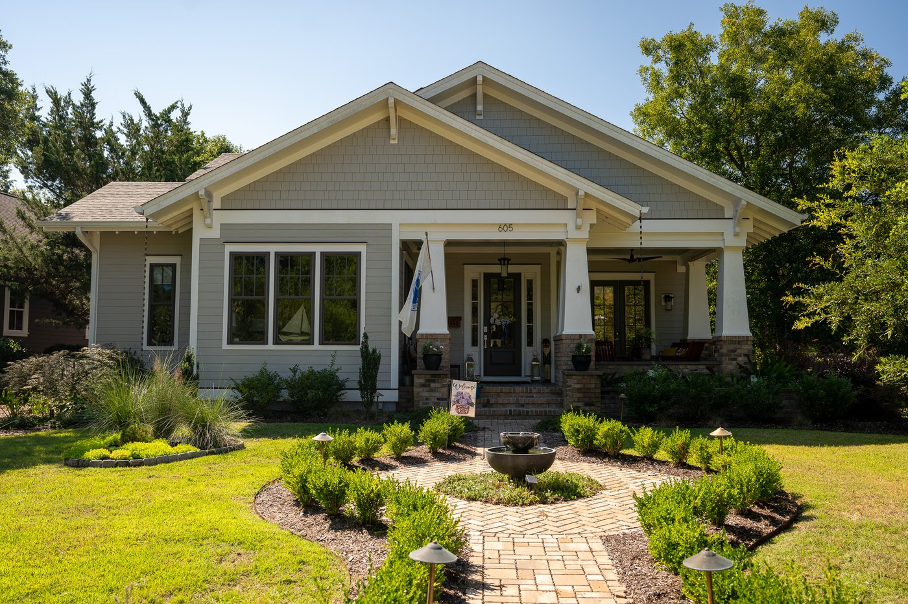

History of 605 W Owens St., the Armistead House

Description
Welcome to 605 W Owens Street!
When you approach the front of this beautiful home, take notice of the unique custom brick planters flanking the front porch. They are built into the structure of the home and surround the porch with an open area for seasonal plantings. This detail is one of many that Sam Condit, the designer of the home, added to this one-of-a-kind Southport creation.
Mr. Condit, a Washington DC based architect, was executive president and managing principal of MiKissack & MiKissack architecture and construction management that had previously worked on restoration of the Jefferson Memorial and the World War II Memorial. He and his company were integral to designing and-building the Martin Luther King Jr Memorial in Washington DC, which opened in August of 2011.
When you enter, you will immediately be greeted by the many styles of artwork on the walls. The entry features Olof Rudbeck antique Swedish prints, setting the tone for bringing the outdoors inside. One of the most striking pieces of art is over the fireplace in the living area. North Carolina artist, Mitchell Lonas, from Asheville, created this stunning incised aluminum panel inspired by nature. His work is featured at the Blue Spiral 1 art gallery in Asheville, NC.
Keeping with the theme of nature, the artisanal lighting over the kitchen island creates thoughts of bird nests with the intertwined metal and glass globes by Simon Pearce who is a world-renowned master of hand blown fine glass. His work is inspired by centuries old Georgian glass making. Pearce’s studio in Quechee, Vermont provided the exquisitely clear hand-blown glass elements for the pendant in collaboration with another Vermont design firm, Hubbarton Forge.
Probably the largest art you will encounter in the home is found in the primary bedroom. The Graham & Brown Walker Seascape mural is based on an original painting by Scottish artist Dame Ethel Walker (1861-1951) displayed in the London Tate Museum. Her work displays the influence of Impressionism and depicts the view of the North Sea at Robin Hood’s Bay, UK.
The inspiration for installing this bold mural came after the homeowners walked the 15 day Coast to Coast route across England, starting on the west coast at St Bee’s Bay, crossing the Lakes District National Park, the Yorkshire Dales, and the North York Moors, which took them over mountains, across fields, thru gates and around lakes until they finished at Robin’s Hood Bay. The seascape mural could depict any ocean, as the owners now enjoy the Southport waterfront.
The style of the home is Craftsman Bungalow and it has typical Craftsman features, including a low pitched gable roof, wide eaves with exposed rafters, and a deep front porch with thick tapered columns on brick bases. Also classic Craftsman is the use of natural materials, such as the Vermont slate on the front porch, the custom built oak hood and shelves in the kitchen, and the custom mahogany vanity in the powder room.
Notes from the owners:
We have always liked the Craftsman style bungalow, so we were inspired to build something similar with an open floor plan. Our goal was to have our essential living space on the first floor, with divided light windows letting in lots of light and opening views to the outside. Our favorite features are our corner front porch, views to our back garden from the sun porch and the screen porch off of our bedroom. Despite the Craftsman “feel,” we like certain contemporary elements like our linear fireplace, floating shelves flanking the fireplace, and artisanal touches such as the Hubbardton Forge/Simon Pearce light fixture above the island.
We built our house in 2022-23, knowing that we would continue to add elements. We added the English Lattice fence, Ipe wood decking on the terrace, and custom made raised garden beds. As avid gardeners, we continue to enhance our landscaping and plan a future water and fire feature in the back garden.
In the primary bedroom, we added the Graham & Brown Walker seascape mural, which is based on an original artwork by Dame Ethel Walker (c.1935), now in the London Tate Museum. This mural titled Seascape Autumn Morning depicts the view of the North Sea at Robin Hood’s Bay, UK. This scene has a special meaning for us–as this was the end point to our 200 mile walk on the Coast to Coast Trail in 2019.
Our home was designed by Sam Condit, a retired Washington DC architect, who is the father of Southport’s Sarah Smith. We credit Sam with so many special features such as the custom brick planters flanking the front porch. Our decor is eclectic and inspired by our travels. We favor NC artists such as Mitchell Lonas who did the piece over the fireplace and love artisanal furniture, such as the Thomas Moser cherry rocker and tables in the great room.